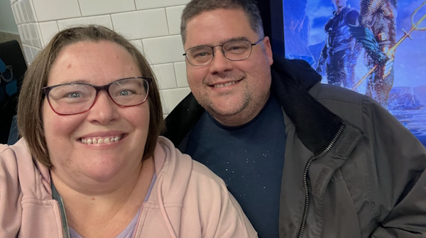

Mr. and Mrs. Green
Mr. Green's business empire has been under investigation for fraud, and Mrs. Green has been seen whispering to people who mysteriously disappear.
Suggested Outfits: Mr. Green wears a green three-piece suit with a pocket watch and shiny black shoes. Mrs. Emerald Green wears an elegant emerald-green evening gown with a diamond necklace and long gloves.
Lady and Lord Peacock

Lady Peacock’s penchant for gossip means she knows everyone’s darkest secrets, and Lord Peacock’s military record has a classified section he refuses to discuss.
Suggested Outfits: Mrs. Peacock wears a royal-blue satin dress, pearl necklace, and a feathered fascinator. Lord Azure Peacock wears a navy-blue blazer, light blue shirt, and polished oxfords with a pocket square.
Miss and Mr. Scarlet
Miss Scarlet’s dramatic flair hides her history of heated arguments with the victim, and Mr. Scarlet’s scripts often feature eerily accurate murder plots.
Suggested Outfits: Miss Scarlet wears a bold red cocktail dress, red lipstick, and stilettos. Mr. Crimson Scarlet wears a red velvet blazer, black shirt, and dark trousers.
Madam and Missy Mustard

Madam Mustard's globetrotting has left her with enemies across the globe, and her daughter, Missy Mustard, seems to know far too much about the victim’s private life.
Suggested Outfits: Madam Saffron Mustard wears a mustard-yellow safari jacket, wide-brimmed hat, and knee-high boots. Miss Citrine Mustard wears a bright yellow sundress with a leather satchel and binoculars.
Mrs. and Dr. White

Mrs. White was seen arguing with the victim over unpaid wages, and Dr. White’s medical practice lost its license after a patient’s untimely death.
Suggested Outfits: Mrs. White wears a crisp white apron over a black dress with a feather duster in hand. Dr. Ivory White wears a white lab coat, glasses, and a pocket full of mysterious vials.
Dr. and Professor Orchid

Dr. Orchid’s experiments in exotic poisons were banned after a deadly accident, and Professor Orchid’s research grants have suspiciously disappeared.
Suggested Outfits: Dr. Orchid wears a pink lab coat over a floral blouse, paired with gardening gloves and boots. Professor Rose Orchid wears a pale pink button-up shirt, tweed jacket, and a magnifying glass in hand.
Professor and Lady Plum

Professor Plum’s inventions often malfunction in dangerous ways, and Lady Plum’s collection of rare books includes several detailing infamous poisonings.
Suggested Outfits: Professor Plum wears a purple vest over a white shirt, purple bowtie, and glasses. Lady Amethyst Plum wears a floor-length amethyst-purple dress with a fur stole and long earrings.
Inspector and Madam Noir

Inspector Noir is rumored to have tampered with evidence in past cases, and Madam Noir’s career as a journalist has involved several mysterious disappearances.
Suggested Outfits: Inspector Noir wears a black trench coat, black fedora, and leather gloves. Madam Onyx Noir wears a sleek black dress with a wide-brimmed hat and dark sunglasses.
Mr. and Madam Mahogany

Mr. Mahogany has been caught selling fake artifacts, and Madam Mahogany’s appraisals have a tendency to undervalue items that later go missing.
Mr. Mahogany wears a brown leather jacket, beige scarf, and a satchel filled with “artifacts.”
Madam Mahogany wears a chocolate-brown dress with gold accents and vintage jewelry.